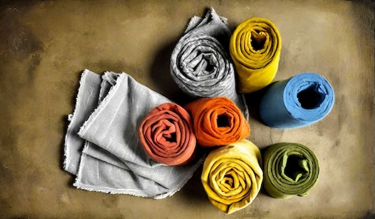

Remove Waste! Upcycle Clothes!
Sustainable Fashion
In the age of the Internet, clothing becomes a race of who can obtain the most "stuff," and trends cycle through faster than you can blink. As an opposition to the sheer amount of waste generated by the overconsumption of clothing, sustainable fashion and the process of upcycling clothes has become increasingly popular. Upcycling refers to the repurposing of old clothing and, instead of contributing more waste, finding a way to keep clothing for longer durations of time.
Environmental Benefits of Upcycling
- Reduces the amount of energy that it takes to produce clothing items through less purchasing power
- Reduces waste in landfills, specifically with cheaply made clothing that is full of toxic pollutants
- Reduces water waste
- Promotes creativity and sustainable habits
Fun Ways to Upcycle
- Cut old pants into shorts to transform your winter wardrobe into a summer outfit
- Embroidery! Add new patterns and fun designs to give your clothes something special
- Turn an old T-shirt into a tote bag
- Add lace trim to clothing
- Cut the neck of shirts to change the neckline and create a new silhouette
